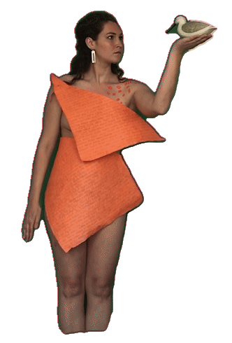
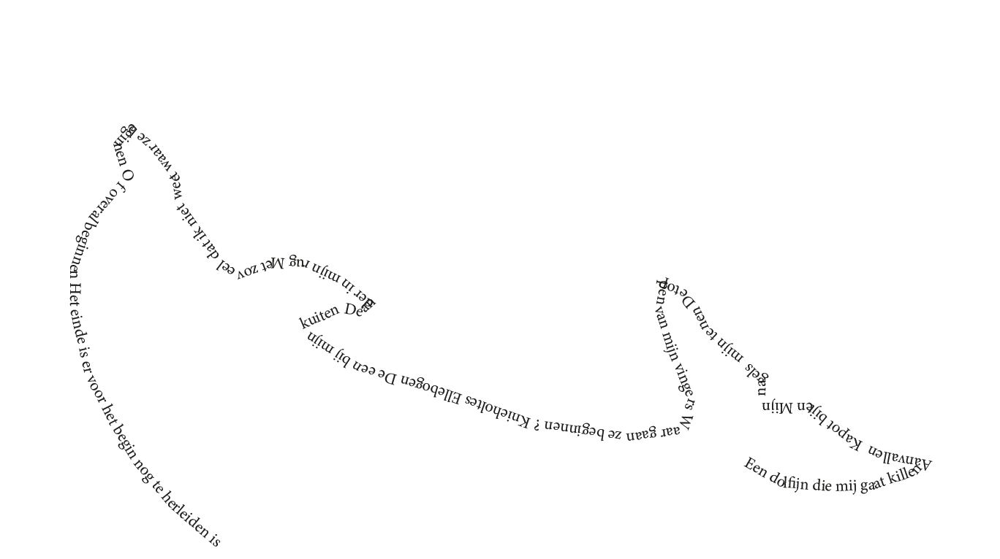

Back


“ Het afstuderen & afstuderen tijdens corona het bezorgt wat angst. Het spookt rond in mijn hoofd. Die angst, allerlei scenario’s die zouden kunnen gebeuren. Bang voor die angst. Bang voor de angst van de angst. Elke ochtend maak ik een wandeling om mijn hoofd een beetje te kalmeren. Toen op dat moment kom ik tijdens mijn wandeling midden op het pad een schaapje tegen. Ontsnapt van de boerderij vlakbij, denk ik. Het schaapje loopt op mij af. Die kijkt mij aan. Toen dacht ik, dit project doe ik niet voor niets. Aan die blik gaf ik betekenis, jij begrijpt mij dacht ik. Zo’n blik die mij even uit de menselijk cirkel doet stappen. Die bij mij naar binnen doet kijken. “
zo beschreef Jacques Derrida in zijn boek “ What is it tobe seen (naked) by one's cat? ”
In deze scène beschrijft hij hoe hij naakt uit de douche stapt als zijn kat naar hem kijkt. Aan die blikt geeft hij een betekenis en begint zich te schamen voor zijn eigen lichaam.
‘The point of view of the absolute other, and nothing will have ever given me more food for thinking through this
absolute alterity of the neighbour or of the next(-door) than these moment when I see myself seen naked under
the gaze of a cat’.
p 11. Derrida, Jacques. The animal that therefore I am. Fordham Univ Press, 2008.